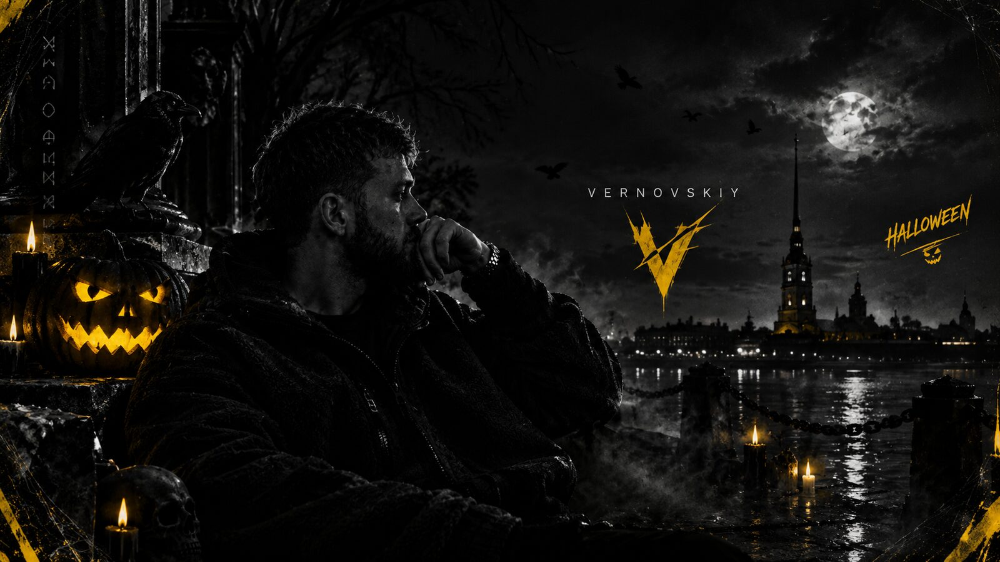

ВЛАДИМИР ВЕРНОВСКИЙ ПРЕДСТАВЛЯЕТ
У КАЖДОЙ
ИДЕИ ЕСТЬ СВОЯ
ИСТОРИЯ.
Личное цифровое пространство Владимира Верновского: проекты, музыка, фильмы и сервисы в одном месте.
Мой мир.
Мои правила.
Цифровое пространство, где проекты, визуальные истории и идеи обретают собственный характер.
Мои проекты.
Мои сервисы и площадки
собраны в одном месте.
Личный канал
Мысли, новости и то, что остаётся за кадром.
Открыть канал ↗Twitch
Стримы, игровые моменты и эфиры.
Перейти ↗Кадры, настроение и визуальные истории.
@vernovskyy ↗Мой магазин
Сервисы и цифровые товары для ПК и смартфонов.
Открыть магазин ↗Vernovskiy Music
Музыкальный сервис в удобном формате.
Запустить ↗Chatterino +
Инструменты и дополнительные возможности для чата.
Открыть ↗EBLO ID
Отдельная площадка в моей цифровой экосистеме.
Перейти ↗Связаться
Для предложений, сотрудничества и рабочих вопросов.
Написать письмо ↗Профиль
Публичная точка входа в мои проекты.
@vernovskiy ↗
VLADIMIR A. VERNOVSKIYНе просто имя.
Это направление.
Меня зовут Владимир Андреевич Верновский. Я писатель и создатель цифровых проектов. Работаю с текстами, визуальной подачей, сайтами, игровым контентом и сервисами — собираю идеи в цельные истории и продукты. Люблю, когда у идеи есть характер, у дизайна — логика, а у результата — смысл.
VERNOVSKIY — личная экосистема проектов, в которой важны самостоятельность, внимание к деталям и постоянное движение вперёд.
Важные даты.
Текущий месяц и ближайшие праздники.
Дата и календарь обновляются автоматически.
Месяц 2026
Киноархив без лишнего.
База фильмов для просмотра на Twitch.
Все исходные статусы сохранены.
Ничего не найдено
Измени запрос или сбрось фильтры.